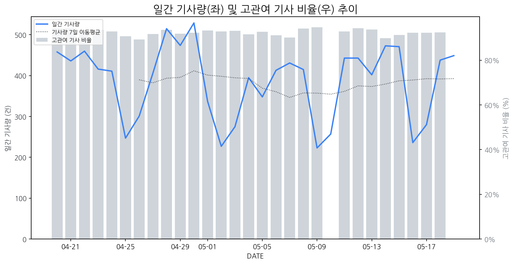

1
시장 활동 지표
기사량 추세 & 이상 징후 탐지
시장의 '전체 기사량'이 평소보다 비정상적으로 급증했는지(Spike)를 차트로 확인하고, LLM이 분석한 급등의 핵심 원인을 파악할 수 있음

고관여 기사란? 산업 연관 키워드로 수집된 기사들 중 디스플레이 키워드에 가중치를 반영하여 도출된 관련성 높은 기사
수집된 기사 수 (2026-05-19)
449
+1% WoW
기사량 변동 수준 (7일 이동평균 대비)
±6.7% 이하
2
오늘의 키워드
급격한 관심 ↑, 주목해야 할 키워드
1
구글
+6.2σ
삼성과 구글이 AI 글라스를 공개하며 디스플레이 없는 AI 경험을 강조했습니다.
Related Metrics
금일 언급량: 31, 전일 대비: +30
Interpretation
AR/VR 시장 성장 기대
Next Step
핵심 토픽 'Set_Manufacturer' 관련 신호입니다. 3번 섹션(키워드 감성분석)에서 해당 토픽의 감성 변동을 교차 확인하세요.
2
nvidia
+2.4σ
엔비디아 CEO 황의 언급으로 AI 칩 수요 증가 및 관련 생태계 확대 기대감이 반영되었습니다.
Related Metrics
금일 언급량: 6, 전일 대비: +5
Interpretation
AI 디스플레이 시장 확대 기대
Next Step
'nvidia' 관련 상세 기사 및 경쟁사 반응 모니터링
3
삼성전자
+2.0σ
삼성전자 마이크로 RGB TV가 해외 주요 매체에서 연이어 호평을 받으며 시장의 기대를 높였습니다.
Related Metrics
금일 언급량: 29, 전일 대비: +4
Interpretation
기술 리더십 재확인
Next Step
핵심 토픽 'Foldable_Display_Topic' 관련 신호입니다. 3번 섹션(키워드 감성분석)에서 해당 토픽의 감성 변동을 교차 확인하세요.
4
google
+1.6σ
구글의 AI 기술 발표 행사 'Google AI Showcase' 개최 소식이 급증의 핵심 원인입니다.
Related Metrics
금일 언급량: 4, 전일 대비: +3
Interpretation
AI 시장 확대, 디스플레이 수요 증가
Next Step
'google' 관련 상세 기사 및 경쟁사 반응 모니터링
3
실시간 Risk 키워드
경계해야 할 시그널 탐지
특정 토픽의 부정 감성 점수가 급등할 때 이를 즉시 탐지하고, "근거 기사" 링크를 통해 리스크의 실체를 빠르게 파악할 수 있음
키워드 분석 결과, 오늘은 걱정할 만한 하락 신호가 없습니다. (부정 언급량 변화: +1.5σ 이내)
4
주요 이벤트 모니터링
실시간 산업 동향 파악을 위한 주요 활동
최근 발생한 주요 기업들의 신제품 출시, 투자 등 주요 이벤트를 제공하여 매일 경쟁사 동향을 확인할 수 있음
한국 디스플레이 산업이 SID 행사에서 AI 및 로봇 기술을 통합한 혁신적인 디스플레이 솔루션을 선보이며 기술 리더십을 강화했다. 이는 경쟁사 대비 압도적인 기술 우위를 유지하려는 한국 기업들의 노력을 보여준다.
Impact
AI와 로봇 기술이 접목된 차세대 디스플레이는 스마트팩토리, 자율주행, 스마트홈 등 다양한 산업 분야에서 새로운 시장 수요를 창출하고 기술 표준을 선도할 것으로 예상된다.
Next Step
AI·로봇 기술과의 시너지를 극대화할 수 있는 융합형 디스플레이 제품 개발 및 파트너십 구축에 집중하여 시장 지배력을 강화해야 한다.
LG전자 TV사업부 박형세 사장이 중국에서 경쟁사인 하이센스 경영진과 만났다. 이 자리에서 양측은 디스플레이 시장 및 기술 동향에 대해 논의한 것으로 알려졌다.
Impact
이번 만남은 치열한 글로벌 TV 시장에서 기술 경쟁 및 협력 가능성을 시사하며, 향후 디스플레이 패널 기술 개발 방향과 시장 전략에 영향을 줄 수 있다.
Next Step
주요 디스플레이 제조 기업은 경쟁사의 동향을 면밀히 주시하며, 차별화된 기술력 확보와 파트너십 전략을 강화해야 한다.
글로벌 칩 부족 현상(칩플레이션)으로 인해 스마트폰 시장이 프리미엄과 중저가로 양극화되는 추세입니다. 삼성전자와 애플은 견고한 실적을 유지하고 있으나, 중국 스마트폰 제조사들은 어려움을 겪고 있습니다.
Impact
디스플레이 시장에서는 프리미엄 스마트폰 판매량 증대에 따라 고성능, 고가 디스플레이 패널의 수요가 증가할 것으로 예상됩니다.
Next Step
프리미엄 스마트폰 제조사에 대한 공급망 안정화 및 고부가가치 디스플레이 기술 개발에 집중하여 시장 지배력을 강화해야 합니다.
최근 IT 기기 시장에서 제품 가격은 상승했지만, 저장 용량은 절반으로 줄어드는 슈링크플레이션 현상이 본격화되고 있습니다. 이는 소비자 구매 심리에 영향을 미치고 제조사의 제품 전략 변화를 예고합니다.
Impact
디스플레이 시장에서는 고용량 저장 공간을 필요로 하는 프리미엄 IT 기기 수요 감소 또는 소비자들의 가성비 기기 선호도 증가로 이어져, 디스플레이 패널의 마이크로SD 카드 확장 슬롯 탑재 여부나 고용량 모델 수요 변화에 영향을 줄 수 있습니다.
Next Step
제품의 핵심 경쟁력으로 디스플레이의 고품질화 및 차별화된 기능 강화에 집중하고, 용량 축소에 따른 소비자 불만을 상쇄할 수 있는 가성비 라인업 구축을 고려해야 합니다.
컴퓨텍스 2026이 개막을 앞두고 전 세계 컴퓨팅 핵심 기업들이 모이는 행사가 될 예정이다. 이 행사는 차세대 컴퓨팅 기술과 제품들의 트렌드를 엿볼 수 있는 중요한 기회가 될 것이다.
Impact
컴퓨팅 시장의 신기술 동향은 디스플레이 수요와 연관된 새로운 폼팩터, 고성능 디스플레이 기술, 또는 특정 애플리케이션을 위한 맞춤형 디스플레이 개발에 영향을 미칠 수 있다.
Next Step
디스플레이 제조 기업은 컴퓨팅 시장의 최신 트렌드와 신제품 출시 동향을 면밀히 파악하여, 향후 디스플레이 수요 증가가 예상되는 분야에 대한 선제적인 기술 개발 및 공급망 구축을 고려해야 한다.